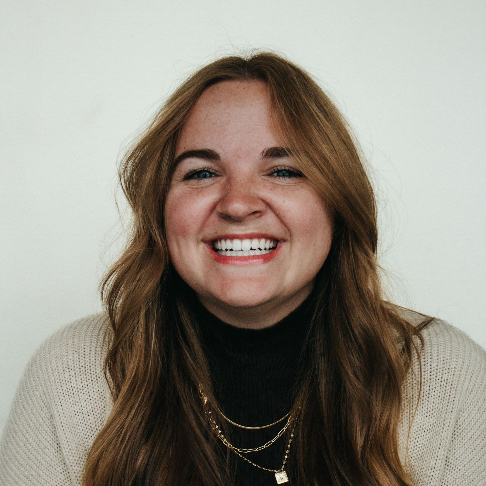

Clarity is kindness.
I believe good design makes things feel simple, even when the underlying process is complex.
Interaction designer with an M.Des from ArtCenter.
I got here by way of international business, four years of project coordination at an architecture and engineering firm, and a stubborn interest in why people do what they do. I use AI for rapid prototyping and validating solutions.

I believe good design makes things feel simple, even when the underlying process is complex.
The best solutions rarely come from working alone. I value early collaboration, because different perspectives lead to stronger products.
The details matter. They might go unnoticed individually, but together they shape how a product feels.
I don't design just to make things look good. Every decision should serve a purpose, address a user need, or make the product work better.
AI helps me prototype and test ideas fast, but it can't tell me why a problem matters. I do that work first, so the speed takes me somewhere useful.
Client work across web and mobile, from research through prototyping and usability testing.
M.Des in Interaction Design. Systems design, service design, futures thinking, design research.
Schedules, document control, and keeping architects and engineers in sync. Four years watching design decisions turn into buildings, budgets, and people's Tuesdays.
Client portfolios, contracts, and document review. The detour, and the first time I saw how much of a business runs on process.
B.S. International Business and Cultures. Minors in Spanish and religious studies.
You can find me playing tennis, running, or, if I'm near a beach, surfing (poorly but enthusiastically). I'm always up for an adventure, and it's better with friends. On slower days, it's a matcha and a book I can't put down. If you have a recommendation, send it my way.